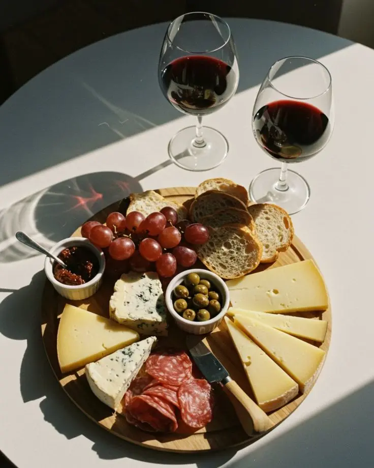

Find den rette vin til maden!
Find den rette vin til maden!
Den rette vin kan gøre en god madoplevelse endnu bedre! Men hvordan finder man egentlig den perfekte kombination? Vin og mad handler om at skabe balance mellem smage, aromaer og teksturer. Nogle vine fremhæver madens sødme, mens andre giver modspil til fede eller krydrede retter. Uanset om du serverer fisk, kød eller vegetariske retter, kan det rette vinvalg gøre hele forskellen. Få inspiration og gode tips til at finde de perfekte kombinationer, så du kan imponere dine gæster og gøre middagen til noget helt særligt.